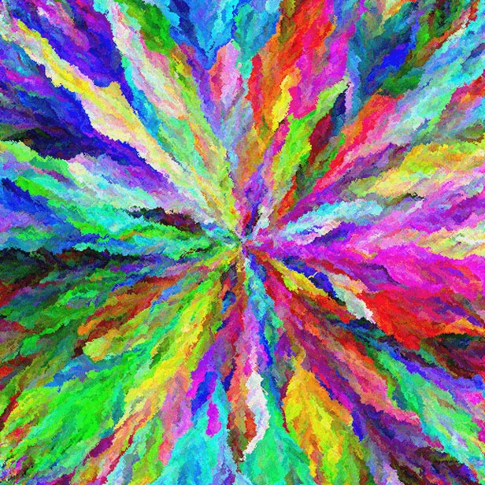
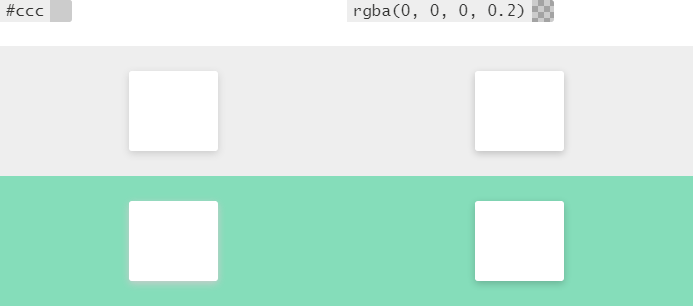

Цвет
Я знаю, что вы думаете. Целая глава про цвет? Поверьте мне, одной главы хватает с трудом. Цвет — это целое измерение и притом невероятно мощное.

Все цвета RGB
Цвет — это цвет, но не цвет...
...для компьютеров
Первый миф, который стоит развеять, что цвета везде одинаковы. На самом деле противоположность гораздо ближе к истине.
- Цвета отображаются по-разному в разных браузерах.
- Скриншоты не всегда захватывают аналогичные цвета.
- Браузеры содержат все виды ошибок, связанных с цветопередачей.
...и не для человеческого глаза
Способ получения цвета для человеческого глаза зависит от множества факторов, в том числе.
- Тип устройства (ноутбук, настольный компьютер, мобильный телефон).
- Расстояние и угол просмотра.
- Качество дисплея (количество отображаемых цветов, точность воспроизведения, поддерживаемый угол обзора, максимальный контраст и др.).
- Условия освещения (внутри или снаружи, день или ночь, возле окна или нет, и т. д.).
- Зрение зрителя (корректирующие линзы, зрительные нарушения, дальтонизм).
Дизайнеры должны быть в курсе этих проблем, так что мы можем обратиться к ним. Вот несколько методов в помощь.
- Выбор цвета, подходящего для текста (и фона под ним).
- Использование скевоморфизма при необходимости, чтобы помочь людям распознавать объекты из реального мира.
- Использование контраста для повышения читабельности (никто не сможет прочитать белый на бежевом).
- Использование узоров в качестве запасного варианта для дальтоников при необходимости.
Но помните, нет ничего лучше, чем видеть. Используйте свои глаза (и глаза пользователей для проверки). Проверьте свой выбор цвета на разных устройствах и в различных условиях освещения, пока не будете уверены, что каждый пользователь увидит желаемое.
Стратегия цвета
Как отмечалось выше, цвет — очень мощный инструмент. Но с большой силой приходит большая ответственность. Цвета могут быть использованы разными путями, но применение цвета для одной вещи может ограничить возможности использовать его где-то ещё. К примеру, если для обозначения бренда применяется узнаваемый зелёный цвет, то это может ограничить вас использовать тот же зелёный, чтобы указать «перейти».
Мощность цвета как эстетического средства, по крайней мере соответствует его мощности в качестве функционального средства. Могут возникнуть ситуации, когда вам нужно сделать выбор между использованием цвета для того или другого.
Инструменты для цвета
Настроение
Знаете ли вы, что красный на самом деле делает людей голодными?
Ну, так же не должно оказаться сюрпризом, что цвета могут влиять на настроение человека и его мнение различными способами. Эти эффекты являются субъективными и в значительной степени зависят от культурных и ситуативных сигналов. Но они очень реальны, поэтому понимание их имеет решающее значение.
Вы хотите шокировать людей? Хотите их успокоить? Хотите, чтобы люди доверяли вам? Хотите их взволновать? Хотите мотивировать людей на действия? Ответы на эти вопросы помогут вам определиться с цветом вашего приложения.
Брендинг
Цвета настолько влиятельны что единственный цвет может подсказать бренд.
Можете ли вы угадать бренд каждого предлагаемого цвета? Наведите указатель, чтобы увидеть ответ.
Coca-Cola
HubSpot
Состояние
Bootstrap популяризировал использование классов состояний, которые связаны с определённым цветом.
Много различных приложений используют это или похожее отображение:
#428bca= primary#dff0d8= success#d9edf7= info#fcf8e3= warning#f2dede= danger
Единообразно используя #dff0d8 для сообщения об успехе или #f2dede для указания опасности, вы закрепляете шаблон, упрощая людям понимание этой идеи в будущем.
Движение, внимание
Иногда вам нужно захватить внимание пользователей. Плавная смена цвета фона или цвета текста (или просто резкое их изменение) может оказаться отличным путём для этого.
Просто ни о чём
Этим списком ни в коем случае не исчерпывается перечень способов, в которых цвет может использоваться в качестве инструмента. Воспользуйтесь своей креативностью и попытайтесь подумать о том как цвет может быть использован для снижения сложности существующего интерфейса.
Просто убедитесь, что вы не зашли чересчур далеко и не используете слишком много цветов. Множество оттенков может вызвать визуальный диссонанс, который не позволяет пользователю сосредоточиться. При выборе цветовой схемы очень важно подумать о том, как цвета соотносятся друг с другом, чтобы избежать подобных проблем.
Цветовые схемы
Выбор цветовой схемы обязателен. Некоторые цвета хорошо сочетаются друг с другом, а другие нет. Есть ряд методик для получения цвета, но лучший совет — это использовать собственные глаза.
Цветовые схемы могут содержать всего несколько цветов или так много, насколько вы хотите. Но я предостерегаю против использования более трёх цветов. В бизнесе три хорошо сочетаемых цвета известны как триады. Вот некоторые великолепные ресурсы по цветовым схемам:
- Codrops: Build a Color Scheme: The Fundamentals — отличный обзор различных типов цветовых сочетаний (монохромные, дополняющие, тройки, четвёрки, сходные);
- Color Scheme Designer — прекрасный инструмент для создания цветовых схем с их сочетаниями;
- Adobe Kuler: Color Wheel — ещё один инструмент для выбора цветовой схемы.
Какой цвет ты имеешь в виду?
Я вижу одну типичную ошибку с цветом, которую делают фронтенд-разработчики при использовании серого цвета (например #ccc), тогда как они подразумевают чёрный с альфа-каналом (например, rgba(0,0,0,0.2)).
Вы можете возразить, что они выглядят одинаково. Ну, конечно. Но только когда они оба на белом фоне!
Пример
Каждый из белых блоков ниже содержит box-shadow: 0 .125em .5em [цвет] и к нему применяется цвет соответствующей колонки.

Оба блока в первом ряду выглядят прекрасно. Но обратите внимание, что левый нижний белый блок выглядит странно. Его тень вызывает визуальный диссонанс с цветом фона. Довольно неприятно.
Выбор хорошего цвета текста по умолчанию
Браузер устанавливает цвет текста по умолчанию как #000. Я думаю, большинство людей воспринимает это интуитивно. Подсознательно в мыслях они рассуждают примерно так: чернила чёрные; документы печатаются чернилами; Интернет является набором цифровых документов; итак, цифровой текст должен быть чёрным.
Это совершенно разумно и на большинстве хороших сайтов цвет текста чёрный. Но в качестве альтернативы во многих ситуациях лучше использовать серый (например #333). И у этого есть ряд преимуществ.
- Резкий контраст чёрного на белом может создать визуальные артефакты или увеличить нагрузку на глаза (обратное тоже верно — это довольно субъективно, но всё же стоит отметить).
- Вы хотите «сохранить»
#000для акцентов или выделений. Это, пожалуй, более веская причина.
Вы можете подумать: но ведь только что показали пример, где предложили использовать чёрный с альфа-каналом вместо серого в ситуациях, когда цвет фона может поменяться... так почему бы вместо этого не установить цвет текста по умолчанию как rgba(0,0,0,0.8)?
Вы будете правы и это, безусловно, вариант. Основным преимуществом является то, что не возникнет конфликта с текстом на фоне отличном от белого (как в примере с зелёным фоном выше). Но я бы не рекомендовал этого повсеместно по двум причинам:
Когда устанавливается color со значением альфа от 0 до 1 браузер WebKit не соблюдает значение по умолчанию -webkit-font-smoothing: subpixel-antialiased и вы не получите субпиксельного сглаживания текста (будет так, словно вы установили -webkit-font-smoothing: antialiased).
Какой алгоритм сглаживания «лучше» зависит от ситуации и это довольно субъективно. Но определённо заметно, что субпиксельное сглаживание является связкой больших проблем, поскольку: 1) WebKit на Маках с ретиной не применяет субпиксельное сглаживание (поэтому вероятно, и будущие дисплеи высокого разрешения не будут) и 2) популярная блог-платформа Medium.com (известная своей красивой типографикой) применяет webkit-font-smoothing: antialiased ко всем документам.
- Производительность может слегка снизиться. Помните, что вы теперь спрашиваете с браузера составной текст и всё, что за ним. Это может быть оптимизировано в WebKit, но не думаю, что где-то ещё.
Резюмирую
Цвет — это сильно. Выберите хороший набор цветов и придерживайтесь его! В самом деле. Если что-то выглядит странно, ничего страшного.
Несколько сайтов со смелой работой с цветом
Дальнейшее чтение
- w3: CSS Color Module Level 3
- MDN: CSS Color
- Codrops: Minimal and Contrasty Color Schemes in Web Design

Все материалы сайта доступны по лицензии Creative Commons «Attribution-NonCommercial» («Атрибуция — Некоммерческое использование») 4.0 Всемирная, если не указано иное.